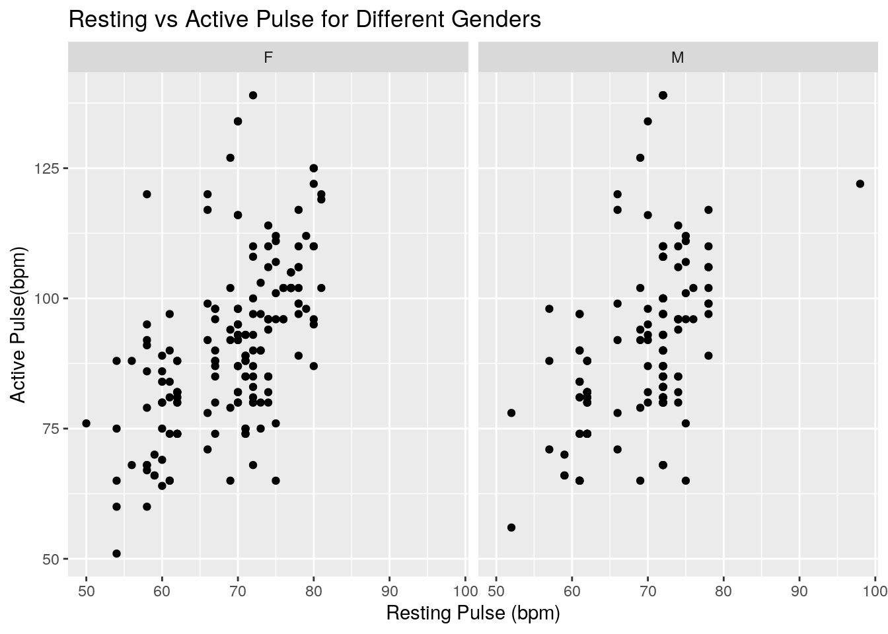
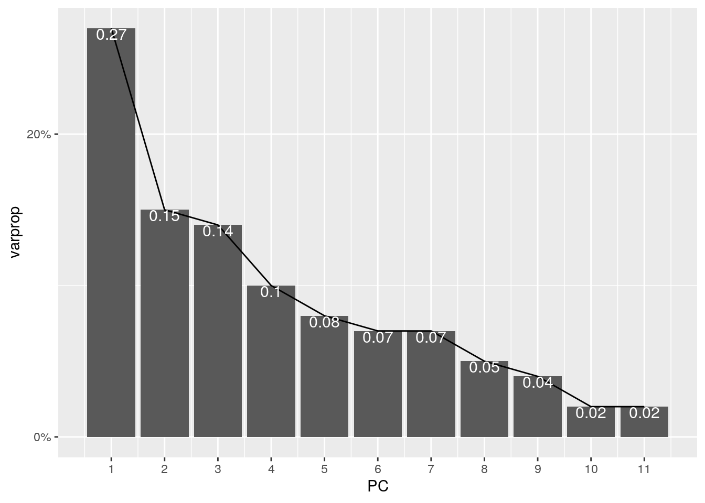

The two datasets being analyzed are ExerciseHours and Pulse. They were acquired through R Studio packages (Lock5Data and Stat2Data) present within the software. I have always been very into exercising and wanted to assess how exercise and pulse rates (both active and resting) relate to each other, if at all. Though the Pulse dataset includes much of this information, the goal is to incorporate the ExerciseHours dataset to better understand the relationships present. I anticipate a slight inverse relationship between the number of hours exercised per week and pulse rate. However, because the pulse rate can never reach zero, a plateau will occur at a particular point in the dataset.
The ExerciseHours dataset looks at 7 variables (Year, Gender, Hand, Exercise, TV, Pulse, Pierces) and 50 observations. This dataset describes each individual’s year in school (1=freshman, 2=sophomore…), their gender (M/F), which hand they write with (L/R), how many hours a week they exercise, how many hours a week they watch TV, their resting pulse, and the number of piercings they have.
The Pulse dataset looks at 7 variables (Active, Rest, Smoke, Sex, Exercise, Hgt, Wgt) and 232 observations. This dataset describes each individual’s active pulse along with their resting pulse, if they smoke (0=no, 1=yes), their gender (0=M, 1=F), how many hours a week they exercise, and their height and weight.
Both datasets were already tidy, and the use of these functions was not efficient at any other point in the analysis process. The ExerciseHours dataset was used to demonstrate knowledge of these functions. The dataset was first pivoted wider to separate the observations by gender. This could be used to more effectively make comparisons between gender on how much they exercise per week. The data was re-tidied to resemble the original dataset through the use of ‘pivot_longer’.
library(Lock5Data)
library(Stat2Data)
library(dplyr)
library(tidyverse)
data(ExerciseHours)
data(Pulse)
glimpse(Wider <- ExerciseHours %>% pivot_wider(names_from = "Gender",
values_from = "Exercise"))## Rows: 50
## Columns: 7
## $ Year <int> 4, 2, 3, 1, 1, 1, 1, 2, 1, 1, 3, 2, 3, 1, 2, 2, 2, 1, 2, 2, 2…
## $ Hand <fct> l, l, r, l, r, r, l, r, r, l, r, r, r, l, r, r, r, r, r, r, r…
## $ TV <int> 5, 14, 3, 5, 2, 14, 0, 2, 5, 4, 4, 6, 3, 3, 1, 10, 10, 5, 10,…
## $ Pulse <int> 57, 70, 70, 66, 62, 62, 74, 70, 60, 74, 61, 72, 66, 98, 61, 4…
## $ Pierces <int> 0, 0, 2, 3, 0, 0, 0, 2, 2, 3, 0, 2, 0, 0, 6, 5, 4, 3, 0, 5, 0…
## $ M <int> 15, 20, NA, NA, 8, 14, 2, NA, NA, NA, 3, NA, 3, 2, NA, NA, NA…
## $ F <int> NA, NA, 2, 10, NA, NA, NA, 14, 10, 12, NA, 10, NA, NA, 0, 10,…glimpse(Wider %>% pivot_longer(c("M", "F"), names_to = "Gender",
values_to = "Exercise"))## Rows: 100
## Columns: 7
## $ Year <int> 4, 4, 2, 2, 3, 3, 1, 1, 1, 1, 1, 1, 1, 1, 2, 2, 1, 1, 1, 1, …
## $ Hand <fct> l, l, l, l, r, r, l, l, r, r, r, r, l, l, r, r, r, r, l, l, …
## $ TV <int> 5, 5, 14, 14, 3, 3, 5, 5, 2, 2, 14, 14, 0, 0, 2, 2, 5, 5, 4,…
## $ Pulse <int> 57, 57, 70, 70, 70, 70, 66, 66, 62, 62, 62, 62, 74, 74, 70, …
## $ Pierces <int> 0, 0, 0, 0, 2, 2, 3, 3, 0, 0, 0, 0, 0, 0, 2, 2, 2, 2, 3, 3, …
## $ Gender <chr> "M", "F", "M", "F", "M", "F", "M", "F", "M", "F", "M", "F", …
## $ Exercise <int> 15, NA, 20, NA, NA, 2, NA, 10, 8, NA, 14, NA, 2, NA, NA, 14,…An inner join was used to join the ExerciseHours and Pulse datasets. This type of join was used to drop any observations that did not have a match in the opposing dataset. Because the number of observations in the two datasets were significantly different, I wanted to ensure each observation had complete description data from both datasets.
The ExerciseHours dataset had 50 original observations, while the Pulse dataset had 232 original observations. Any observations that had NA’s were dropped to ensure metrics other than the direct ones being studied could be observed to describe the data. The issue with this, however, is that dropping rows with any NA’s can result in critical information being left out of analysis, to either give a better idea about the data or come to completely different conclusions. After omitting NA’s the number of observations in the dataset was 324.
ExWRest <- ExerciseHours %>% rename(Rest = Pulse) %>% rename(Sex = Gender)
glimpse(ExWRest)## Rows: 50
## Columns: 7
## $ Year <int> 4, 2, 3, 1, 1, 1, 1, 2, 1, 1, 3, 2, 3, 1, 2, 2, 2, 1, 2, 2, …
## $ Sex <fct> M, M, F, F, M, M, M, F, F, F, M, F, M, M, F, F, F, F, M, F, …
## $ Hand <fct> l, l, r, l, r, r, l, r, r, l, r, r, r, l, r, r, r, r, r, r, …
## $ Exercise <int> 15, 20, 2, 10, 8, 14, 2, 14, 10, 12, 3, 10, 3, 2, 0, 10, 12,…
## $ TV <int> 5, 14, 3, 5, 2, 14, 0, 2, 5, 4, 4, 6, 3, 3, 1, 10, 10, 5, 10…
## $ Rest <int> 57, 70, 70, 66, 62, 62, 74, 70, 60, 74, 61, 72, 66, 98, 61, …
## $ Pierces <int> 0, 0, 2, 3, 0, 0, 0, 2, 2, 3, 0, 2, 0, 0, 6, 5, 4, 3, 0, 5, …Joint <- inner_join(ExWRest, Pulse, by = "Rest") %>% na.omit
glimpse(Joint)## Rows: 324
## Columns: 13
## $ Year <int> 4, 4, 4, 2, 2, 2, 2, 2, 2, 2, 2, 2, 3, 3, 3, 3, 3, 3, 3, 3…
## $ Sex.x <fct> M, M, M, M, M, M, M, M, M, M, M, M, F, F, F, F, F, F, F, F…
## $ Hand <fct> l, l, l, l, l, l, l, l, l, l, l, l, r, r, r, r, r, r, r, r…
## $ Exercise.x <int> 15, 15, 15, 20, 20, 20, 20, 20, 20, 20, 20, 20, 2, 2, 2, 2…
## $ TV <int> 5, 5, 5, 14, 14, 14, 14, 14, 14, 14, 14, 14, 3, 3, 3, 3, 3…
## $ Rest <int> 57, 57, 57, 70, 70, 70, 70, 70, 70, 70, 70, 70, 70, 70, 70…
## $ Pierces <int> 0, 0, 0, 0, 0, 0, 0, 0, 0, 0, 0, 0, 2, 2, 2, 2, 2, 2, 2, 2…
## $ Active <int> 98, 71, 88, 134, 93, 116, 80, 87, 82, 98, 92, 95, 134, 93,…
## $ Smoke <int> 0, 0, 0, 0, 0, 1, 0, 0, 1, 0, 0, 0, 0, 0, 1, 0, 0, 1, 0, 0…
## $ Sex.y <int> 0, 1, 0, 1, 1, 1, 0, 0, 0, 0, 0, 1, 1, 1, 1, 0, 0, 0, 0, 0…
## $ Exercise.y <int> 3, 3, 3, 2, 1, 2, 2, 2, 1, 3, 1, 2, 2, 1, 2, 2, 2, 1, 3, 1…
## $ Hgt <int> 72, 65, 76, 68, 67, 70, 70, 73, 70, 70, 76, 66, 68, 67, 70…
## $ Wgt <int> 175, 145, 230, 150, 115, 150, 175, 210, 185, 245, 260, 150…The joined dataset was then separated to better assess exercise per week, TV time per week, resting/active pulse, height, and weight between the two genders, arranging the data in descending order of exercise per week. This allowed for better observation of relationships between exercise per week and pulse rates.
Females <- Joint %>% filter(Sex.x == "F") %>% group_by(Rest) %>%
arrange(desc(Exercise.x)) %>% select(Sex.x, Exercise.x, TV,
Rest, Active, Hgt, Wgt)
glimpse(Females)## Rows: 174
## Columns: 7
## Groups: Rest [23]
## $ Sex.x <fct> F, F, F, F, F, F, F, F, F, F, F, F, F, F, F, F, F, F, F, F…
## $ Exercise.x <int> 34, 34, 34, 34, 34, 34, 23, 23, 23, 23, 23, 23, 23, 23, 23…
## $ TV <int> 4, 4, 4, 4, 4, 4, 4, 4, 4, 4, 4, 4, 4, 4, 4, 4, 6, 6, 6, 6…
## $ Rest <int> 71, 71, 71, 71, 71, 71, 67, 67, 67, 67, 67, 67, 67, 67, 67…
## $ Active <int> 74, 88, 89, 85, 75, 93, 74, 80, 88, 98, 96, 90, 98, 88, 85…
## $ Hgt <int> 70, 61, 61, 68, 70, 67, 68, 65, 64, 64, 64, 74, 63, 68, 70…
## $ Wgt <int> 190, 110, 150, 130, 175, 175, 150, 133, 135, 140, 165, 180…Males <- Joint %>% filter(Sex.x == "M") %>% group_by(Rest) %>%
arrange(desc(Exercise.x)) %>% select(Sex.x, Exercise.x, TV,
Rest, Active, Hgt, Wgt)
glimpse(Males)## Rows: 150
## Columns: 7
## Groups: Rest [14]
## $ Sex.x <fct> M, M, M, M, M, M, M, M, M, M, M, M, M, M, M, M, M, M, M, M…
## $ Exercise.x <int> 30, 30, 30, 30, 30, 30, 27, 27, 27, 27, 27, 27, 27, 27, 27…
## $ TV <int> 10, 10, 10, 10, 10, 10, 2, 2, 2, 2, 2, 2, 2, 2, 2, 2, 2, 2…
## $ Rest <int> 69, 69, 69, 69, 69, 69, 72, 72, 72, 72, 72, 72, 72, 72, 72…
## $ Active <int> 92, 65, 94, 127, 102, 79, 100, 108, 110, 80, 87, 85, 97, 9…
## $ Hgt <int> 68, 71, 72, 64, 63, 71, 74, 67, 66, 70, 70, 72, 64, 71, 67…
## $ Wgt <int> 210, 165, 195, 135, 110, 148, 200, 170, 130, 135, 173, 140…For both genders, the mean exercise per week, TV time per week, and active pulse rates were calculated for each of the resting pulse rates to better condense the data and make comparisons between gender. New variables were created (pchange) to make it easier to assess pulse rate changes that occur for each individual within each gender.
FMeans <- Females %>% summarize_at(c("Exercise.x", "TV", "Active"),
mean, na.rm = T)
glimpse(FMeans)## Rows: 23
## Columns: 4
## $ Rest <int> 50, 54, 56, 58, 59, 60, 61, 62, 66, 67, 69, 70, 71, 72, 73…
## $ Exercise.x <dbl> 8.0, 15.0, 12.0, 20.0, 2.0, 10.0, 0.0, 9.5, 10.0, 23.0, 6.…
## $ TV <dbl> 0.0, 2.0, 6.0, 6.0, 4.0, 5.0, 1.0, 4.0, 5.0, 4.0, 4.0, 2.5…
## $ Active <dbl> 76.00000, 67.80000, 78.00000, 82.60000, 67.33333, 78.37500…MMeans <- Males %>% summarize_at(c("Exercise.x", "TV", "Active"),
mean, na.rm = T)
glimpse(MMeans)## Rows: 14
## Columns: 4
## $ Rest <int> 52, 57, 59, 61, 62, 66, 69, 70, 72, 74, 75, 76, 78, 98
## $ Exercise.x <dbl> 8.00, 15.00, 2.00, 8.50, 12.00, 3.00, 30.00, 20.00, 14.75,…
## $ TV <dbl> 2.000000, 5.000000, 2.000000, 5.500000, 6.666667, 3.000000…
## $ Active <dbl> 67.00000, 85.66667, 67.33333, 79.42857, 80.14286, 96.16667…FMeans <- FMeans %>% mutate(pchange = Active - Rest)
glimpse(FMeans)## Rows: 23
## Columns: 5
## $ Rest <int> 50, 54, 56, 58, 59, 60, 61, 62, 66, 67, 69, 70, 71, 72, 73…
## $ Exercise.x <dbl> 8.0, 15.0, 12.0, 20.0, 2.0, 10.0, 0.0, 9.5, 10.0, 23.0, 6.…
## $ TV <dbl> 0.0, 2.0, 6.0, 6.0, 4.0, 5.0, 1.0, 4.0, 5.0, 4.0, 4.0, 2.5…
## $ Active <dbl> 76.00000, 67.80000, 78.00000, 82.60000, 67.33333, 78.37500…
## $ pchange <dbl> 26.000000, 13.800000, 22.000000, 24.600000, 8.333333, 18.3…MMeans <- MMeans %>% mutate(pchange = Active - Rest)
glimpse(MMeans)## Rows: 14
## Columns: 5
## $ Rest <int> 52, 57, 59, 61, 62, 66, 69, 70, 72, 74, 75, 76, 78, 98
## $ Exercise.x <dbl> 8.00, 15.00, 2.00, 8.50, 12.00, 3.00, 30.00, 20.00, 14.75,…
## $ TV <dbl> 2.000000, 5.000000, 2.000000, 5.500000, 6.666667, 3.000000…
## $ Active <dbl> 67.00000, 85.66667, 67.33333, 79.42857, 80.14286, 96.16667…
## $ pchange <dbl> 15.000000, 28.666667, 8.333333, 18.428571, 18.142857, 30.1…With few exceptions, it can be concluded that overall males experience a lesser change in pulse rate (active-resting) than females do.
Summary statistics were then found for the numeric variables as is, based off of handedness, and finally gender differences within handedness.
Joint %>% summarize(mean_Ex = mean(Exercise.x), sd_Ex = sd(Exercise.x),
min_Ex = min(Exercise.x), max_Ex = max(Exercise.x), n_Ex = n_distinct(Exercise.x),
mean_TV = mean(TV), sd_TV = sd(TV), min_TV = min(TV), max_TV = max(TV),
n_TV = n_distinct(TV), mean_Rest = mean(Rest), sd_Rest = sd(Rest),
min_Rest = min(Rest), max_Rest = max(Rest), n_Rest = n_distinct(Rest),
mean_Active = mean(Active), sd_Active = sd(Active), min_Active = min(Active),
max_Active = max(Active), n_Active = n_distinct(Active),
mean_Hgt = mean(Hgt), sd_Hgt = sd(Hgt), min_Hgt = min(Hgt),
max_Hgt = max(Hgt), n_Hgt = n_distinct(Hgt), mean_Wgt = mean(Wgt),
sd_Wgt = sd(Wgt), min_Wgt = min(Wgt), max_Wgt = max(Wgt),
n_Wgt = n_distinct(Wgt))## mean_Ex sd_Ex min_Ex max_Ex n_Ex mean_TV sd_TV min_TV max_TV n_TV
## 1 11.51852 8.251257 0 34 20 4.762346 3.757634 0 15 13
## mean_Rest sd_Rest min_Rest max_Rest n_Rest mean_Active sd_Active min_Active
## 1 69.05864 6.827799 50 98 26 90.61728 16.17422 51
## max_Active n_Active mean_Hgt sd_Hgt min_Hgt max_Hgt n_Hgt mean_Wgt sd_Wgt
## 1 139 57 68.51543 3.678623 60 77 18 158.2901 30.57178
## min_Wgt max_Wgt n_Wgt
## 1 102 260 59Joint %>% group_by(Hand) %>% summarize(mean_Ex = mean(Exercise.x),
sd_Ex = sd(Exercise.x), min_Ex = min(Exercise.x), max_Ex = max(Exercise.x),
n_Ex = n_distinct(Exercise.x), mean_TV = mean(TV), sd_TV = sd(TV),
min_TV = min(TV), max_TV = max(TV), n_TV = n_distinct(TV),
mean_Rest = mean(Rest), sd_Rest = sd(Rest), min_Rest = min(Rest),
max_Rest = max(Rest), n_Rest = n_distinct(Rest), mean_Active = mean(Active),
sd_Active = sd(Active), min_Active = min(Active), max_Active = max(Active),
n_Active = n_distinct(Active), mean_Hgt = mean(Hgt), sd_Hgt = sd(Hgt),
min_Hgt = min(Hgt), max_Hgt = max(Hgt), n_Hgt = n_distinct(Hgt),
mean_Wgt = mean(Wgt), sd_Wgt = sd(Wgt), min_Wgt = min(Wgt),
max_Wgt = max(Wgt), n_Wgt = n_distinct(Wgt))## # A tibble: 2 x 31
## Hand mean_Ex sd_Ex min_Ex max_Ex n_Ex mean_TV sd_TV min_TV max_TV n_TV
## <fct> <dbl> <dbl> <int> <int> <int> <dbl> <dbl> <int> <int> <int>
## 1 l 8.73 6.55 2 20 6 4.48 4.59 0 14 8
## 2 r 12.2 8.50 0 34 19 4.83 3.52 0 15 12
## # … with 20 more variables: mean_Rest <dbl>, sd_Rest <dbl>, min_Rest <int>,
## # max_Rest <int>, n_Rest <int>, mean_Active <dbl>, sd_Active <dbl>,
## # min_Active <int>, max_Active <int>, n_Active <int>, mean_Hgt <dbl>,
## # sd_Hgt <dbl>, min_Hgt <int>, max_Hgt <int>, n_Hgt <int>, mean_Wgt <dbl>,
## # sd_Wgt <dbl>, min_Wgt <int>, max_Wgt <int>, n_Wgt <int>Joint %>% group_by(Sex.x, Hand) %>% summarize(mean_Ex = mean(Exercise.x),
sd_Ex = sd(Exercise.x), min_Ex = min(Exercise.x), max_Ex = max(Exercise.x),
n_Ex = n_distinct(Exercise.x), mean_TV = mean(TV), sd_TV = sd(TV),
min_TV = min(TV), max_TV = max(TV), n_TV = n_distinct(TV),
mean_Rest = mean(Rest), sd_Rest = sd(Rest), min_Rest = min(Rest),
max_Rest = max(Rest), n_Rest = n_distinct(Rest), mean_Active = mean(Active),
sd_Active = sd(Active), min_Active = min(Active), max_Active = max(Active),
n_Active = n_distinct(Active), mean_Hgt = mean(Hgt), sd_Hgt = sd(Hgt),
min_Hgt = min(Hgt), max_Hgt = max(Hgt), n_Hgt = n_distinct(Hgt),
mean_Wgt = mean(Wgt), sd_Wgt = sd(Wgt), min_Wgt = min(Wgt),
max_Wgt = max(Wgt), n_Wgt = n_distinct(Wgt))## # A tibble: 4 x 32
## # Groups: Sex.x [2]
## Sex.x Hand mean_Ex sd_Ex min_Ex max_Ex n_Ex mean_TV sd_TV min_TV max_TV
## <fct> <fct> <dbl> <dbl> <int> <int> <int> <dbl> <dbl> <int> <int>
## 1 F l 10.2 4.14 3 15 4 4.93 2.37 2 9
## 2 F r 10.3 8.29 0 34 15 4.56 2.89 0 15
## 3 M l 7.66 7.75 2 20 4 4.16 5.71 0 14
## 4 M r 14.8 8.13 2 30 10 5.19 4.19 0 14
## # … with 21 more variables: n_TV <int>, mean_Rest <dbl>, sd_Rest <dbl>,
## # min_Rest <int>, max_Rest <int>, n_Rest <int>, mean_Active <dbl>,
## # sd_Active <dbl>, min_Active <int>, max_Active <int>, n_Active <int>,
## # mean_Hgt <dbl>, sd_Hgt <dbl>, min_Hgt <int>, max_Hgt <int>, n_Hgt <int>,
## # mean_Wgt <dbl>, sd_Wgt <dbl>, min_Wgt <int>, max_Wgt <int>, n_Wgt <int>When assessing summary statistics within handedness, the only significant differences that can be observed is in mean exercise time per week. Right-handed individuals appear to exercise approximately 4 hours a week more than left-handed individuals. However, this does not seem to affect either pulse rate significantly.
When assessing summary statistics for gender differences within handedness, females appear to exhibit comparable mean exercise times between left and right-handed individuals, while males exhibit a 7 hour difference between left and right-handed individuals (right-handed exercising more). This difference doesn’t appear to affect any other metrics, except for mean active pulse. The right-handed males, who exercise more, have a mean active pulse rate that is 6 bpm less than the left-handed males. This suggests a potential inverse relationship between amount of exercise and active pulse rates.
When assessing the correlation heat map, a very small negative correlation appears to exist between amount of exercise per week and active pulse rate, the primary two variables being analyzed. Looking further, moderate to strong positive relationships appear to exist between resting and active potentials (expected), exercise per week and TV time per week, and sex and active pulse rates. These relationships make sense fundamentally, however they are not very strong within these datasets. Overall, not a lot of correlation exists between the variables being assessed in this dataset.
Knowing a strong correlation exists between resting and active pulse rates, these will be further analyzed based on the differences seen between genders and handedness through the following two plots.
Joint %>% ggplot(aes(x = Sex.x, y = Exercise.x)) + geom_bar(aes(fill = Sex.x),
stat = "summary", fun = "mean", breaks = 25) + ylab("Exercise Per Week (hr)") +
xlab("Sex") + geom_errorbar(stat = "summary", width = 0.2) +
scale_fill_brewer(palette = "BrBg") + ggtitle("Exercise Per Week for Males & Females Broken Down by Handedness") +
facet_wrap(~Hand)Joint %>% ggplot(aes(x = Rest, y = Active)) + geom_point(color = "black") +
ggtitle("Resting vs Active Pulse for Different Genders") +
xlab("Resting Pulse (bpm)") + ylab("Active Pulse(bpm)") +
theme(legend.position = "none") + facet_wrap(~Sex.x) Plotting the relationship analzyed through summary statistics, regarding handedness between the genders and exercise time per week, it is very evident that a males of right and left-handed status differ in the amount of time per week they exercise, while females of both handedness appear to exercise consistent amounts. This difference could be due to sampling error, however, it is the primary data that supports an inverse relationship between exercise and active pulse rates, so it should be noted.
Conversely, when active and resting pulse rates were plotted and analyzed between the genders, it was evident that a positive correlation existed between resting and active pulse rates, however, there was no significant distinction observed between the trends seen in each gender. It is for these reasons that a true correlational relationship cannot be sufficiently supported through the data provided.
In order to use PCA, only the numeric data must be selected. This data is then scaled to represent a normal distribution to help standardize the analysis. The principal component function can then be used on the scaled data to generate PCs.
Joint1 <- Joint %>% select(is.numeric)
JointNum <- Joint1 %>% scale
Joint_PCA <- princomp(JointNum)
names(Joint_PCA)## [1] "sdev" "loadings" "center" "scale" "n.obs" "scores" "call"summary(Joint_PCA)## Importance of components:
## Comp.1 Comp.2 Comp.3 Comp.4 Comp.5
## Standard deviation 1.7148433 1.2653454 1.2233086 1.02901183 0.94152621
## Proportion of Variance 0.2681629 0.1460051 0.1364652 0.09655851 0.08083783
## Cumulative Proportion 0.2681629 0.4141680 0.5506332 0.64719168 0.72802951
## Comp.6 Comp.7 Comp.8 Comp.9 Comp.10
## Standard deviation 0.88071371 0.86547704 0.74999172 0.62713587 0.52272204
## Proportion of Variance 0.07073255 0.06830632 0.05129355 0.03586519 0.02491675
## Cumulative Proportion 0.79876206 0.86706838 0.91836193 0.95422712 0.97914387
## Comp.11
## Standard deviation 0.47823570
## Proportion of Variance 0.02085613
## Cumulative Proportion 1.00000000To determine the number of principal components to keep, a scree plot is generated to assess eigenvalues in descending order. When the plot appears to level off, that is how many PCs will be used. In the case of the Joint data, that would be 5 principal components, meaning the data cannot be sufficiently described in less clusters.
eigval <- Joint_PCA$sdev^2
eigval## Comp.1 Comp.2 Comp.3 Comp.4 Comp.5 Comp.6 Comp.7 Comp.8
## 2.9406877 1.6010991 1.4964838 1.0588653 0.8864716 0.7756566 0.7490505 0.5624876
## Comp.9 Comp.10 Comp.11
## 0.3932994 0.2732383 0.2287094varprop <- round(eigval/sum(eigval), 2)
ggplot() + geom_bar(aes(y = varprop, x = 1:11), stat = "identity") +
xlab("PC") + geom_path(aes(y = varprop, x = 1:11)) + geom_text(aes(x = 1:11,
y = varprop, label = round(varprop, 3)), vjust = 1, col = "white",
size = 4) + scale_y_continuous(breaks = seq(0, 0.8, 0.2),
labels = scales::percent) + scale_x_continuous(breaks = 1:11)
After determining the final number of clusters to use, the PCA scores can be plotted to observe the clusters. Only the first 4 PCs will be shown below, but this technique can be used for all principal components.
JointA <- Joint %>% data.frame %>% mutate(PC1 = Joint_PCA$scores[,
1], PC2 = Joint_PCA$scores[, 2], PC3 = Joint_PCA$scores[,
3], PC4 = Joint_PCA$scores[, 4], PC5 = Joint_PCA$scores[,
5])
JointA %>% ggplot(aes(PC1, PC2)) + geom_point(size = 3)JointA %>% ggplot(aes(PC3, PC4)) + geom_point(size = 3)After assessing plots of both PC1 vs PC2 and PC3 vs PC4, it is evident strong clustering does not exist in either. This is consistent with previous data, such as the correlation heat map, that showed little correlational relationships between variables. Through the various methods used to analyze this data, it can be concluded that no relational dependence exists within the dataset. There is not sufficient evidence to support the two variables being specifically analyzed (exercise per week and active pulse rate) to be related to one another.